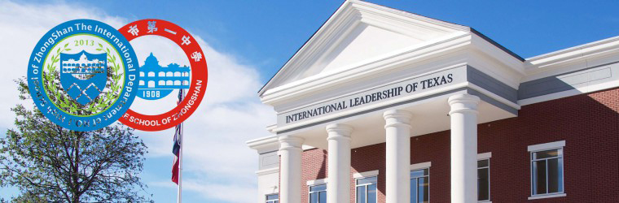

中山一中国际部概况

国际部成立
为适应教育国际化趋势，满足社会对教育多样化和学生求学个性化的需求，进一步拓宽学生升学渠道，我校取得美国德州教育部的支持，与美国德州托马斯杰斐逊高中、德州国际领袖高中达成合作，经市教育局批准，于2013年9月开设国际部，招收初中毕业生。国际部旨在引进国外先进的教育理念、教学模式和教学内容，整合中外教育优势，培养学生国际视野和学生综合素质，为学生搭起通往美国等英语国家一流大学的桥梁。
中山一中国际部2013年9月正式成立，中方教师和美方学校、项目中方代表相互沟通和协调，根据学生的学习情况不断完善课程设置，并为学生安排了多场国外知名大学的招生说明会，国际部各项工作运行顺利。通过学习，国际部的学生已经逐步适应了国际部课程，在学习能力、独立生活能力、社会实践能力等方面取得了明显的提高。
课程与国际接轨

国际部学生接受与美国公立高中德州托马斯杰斐逊高中和德州国际领袖高中相似的教育理念和教学课程。充分发挥中西教育优势，既保留国内高中课程的深度与质量，又融入西方教育教学理念，拓宽学生国际视野，提高学生创新能力。国际部采用中、英文授课的方式。我校选派经验丰富的优秀教师教授中方高中课程，德州教育部选拔具有教师资格并有丰富教学经验的外教教授美方课程。每年暑假，学生可参加由美方合作中学组织哥伦比亚大学等举办的暑期课程体验活动，增进学生对异域文化及世界名校的了解和认识。国际部学生有三种出国选择，一是学生高二通过面试直接到美国读高三，和美国学生一起冲击美国顶尖名校；二是2+2+2模式，学生通过国际部的学习，在高一或高二时通过面试，提前收到美国前50名美国大学的预录通知书（大三、大四）。高二毕业时转入美国高校进行2年的学习，获得华盛顿高中文凭和大一、大二的学分，2年后凭借相应的学分直接转入美国名牌大学就读。毕业时获得美国名牌大学的文凭；三是学生参加南卫理公会大学等美国大学针对国际部学生开展的自主招生，被美国大学直接录取。
在秋季学期初举行的国际部家长开放日里，家长们拿到课堂表，看到孩子们除了要学习英文课程、美国高中物理、演讲艺术等纯英文课程之外，还有SAT中文，鉴赏中国古典文学及演讲课程等，家长们认为国际部的课程设置不仅适合孩子们的升学需求和拓宽国际视野，也着重培养孩子们的寻根意识和家国情怀。
国际部使命
引进国外先进的教育理念、教学模式和教学内容，整合中外教育优势，培养学生国际视野和综合素质，为学生搭起通往美国等英语国家一流大学的桥梁。
培养有责任心，有担当的21世纪新人才。
As you walk out of your home ,you shoulder the honor and disgrace of your family.
当你走出家门，肩上就扛着家庭的荣辱。
As you walk out of your school ,you shoulder the honor and disgrace of your school.
当你走出校门，肩上就扛着学校的荣辱。
As you walk out of your nation ,you shoulder the honor and disgrace of your nation.
当你走出国门，肩上就扛着国家的荣辱。
1培养独立意识和责任感
在国际部家长会上，我校国际部美方项目中国区代表黄翔先生向家长们介绍了国际班的课程安排、成绩计算和管理模式。不同于高考一考定输赢，国际部的学生考核会通过日常小测、课堂表现、日常表现、社会实践、托福、SAT考试等多项指标来衡量，每次考试成绩不理想都可申请补考机会。所以说，学生在学习和生活中所有的表现都会纳入学生最后的成绩考核，如果要取得好成绩，学生必须主动去管理自己的学习和生活。值得一提的是，国际部不对学生成绩进行排名，学生之间不存在竞争，是自己与自己的较量。
2怀着中国心走向世界
开学至今，国际班的学生迎来了5场美国大学、1场美国高中招生说明会，分别是：佛罗里达理工学院、中密歇根大学、达拉斯浸会大学、波特兰州立大学、北西雅图大学和德州国际领袖中学。
在与各个学校招生办负责人的交流中，同学们胆大心细，关注国外的课程、大学的专业选择和课外生活情况，对国外的生活有期待也有担忧。6所学校对我校国际部学生的评价也颇高，认为同学们热情、活泼。
我校王锡文校长在面对国际班的学生时，多次提到，希望学生不要抱着逃离高考的心态出国，因为美国的中学和大学对学生的要求也很高，易进难出。为了让同学们进入更好的美国高中和大学，中美合作双方各自选派了优秀教师。中山市教育局对国际部的师资配备和教学管理均给予了高度评价。希望同学们能够珍惜现在的学习生活，养成主动学习的习惯，锻炼独立生活的能力，不让家长担忧，怀揣一颗中国心走向世界。
作为德州教育部国际领袖学校学区监管，Conger先生2次莅临我校，与我校师生交流，解答学生困惑，了解其学习生活情况。Conger先生说，当国际部的学生走出国门在外求学的时候，不光代表学校、家庭更代表国家，因此希望同学们能像课室墙上的标语一样，学成之后“带着荣誉回来”。Conger先生说，为了培养学生的国际视野，德州国际领袖高中要求学生学习中文、英文和西班牙语3种语言，这样就可以走遍世界上75%的国家和地区。同时，他也希望同学们去美国之后，能够积极参加社团活动、社区服务，融入美国社会。
国际部教学工作已经日趋成熟，但是国际部仍然是中山一中一个新的正在蓬勃发展的项目，对学生、老师、学校来说都是一个挑战。国际部老师表示，将尽自己最大的努力继续探索国际部的教学及管理，为学生开拓一个发展的崭新平台，也为学校多元化办学开拓新的路径。
- 学校周边
-
德克萨斯州概况
德克萨斯州是美国人口，面积和经济的第二大洲，位于美国南部的中心地带。南部与墨西哥接壤。其首府是奥斯汀，最大的城市是休斯敦。
德州天气：夏季炎热，温度在32℃－38℃左右。冬天缓和，南部温度在4－10℃。空气质量较好。
德州拥有以下知名学府：
- 莱斯大学（美国南方最高学府，TOP20）
- 德州大学奥斯汀分校（常年综排前50，商学院排名全美前三）
- 德州农工大学（USNEWS综排68）
- 南卫理公会大学（全美最美校园之一）
- 贝勒医学院（历史悠久，全美最优秀的医学院代表）德州工业，农业及对外贸易发达，是美国就业率最高，失业率最低的州。 很多世界500强企业将总部设在德州，例如： 美国航空公司 埃克森美孚 壳牌石油 中石油北美总部 戴尔 华为北美总部 TOYOTA北美总部
-
ILTexas优势
英语，中文和西班牙语教学
在美国乃至世界上，德克萨斯州拥有强大的经济实力。墨西哥，加拿大和中国是我们的前三个主要的出口国家，中国已跃居世界第二大经济体。为了保持德克萨斯州和美国的领先地位，我们为学生提供一个独特的教育机会，以确认他们能讲流行的英语，西班牙语和汉语。
升学优势Top 10% rule
德州国际领袖学校毕业班年级排名前10%的学生可以被德州所有公立学校自动录取，不需要托福成绩和SAT成绩。
在德州国际领袖学校就读的中国学生，只要在校学习，必要时申请包括UT Austin在内的德州公立大学是享受“美国公民待遇”：即自动享受和州内学生一样的学费（州内学费约为国际学生学费的1/4-1/3，2014年德州大学奥斯汀分校州内学费为$9,816，国际学生学费$34,860）。